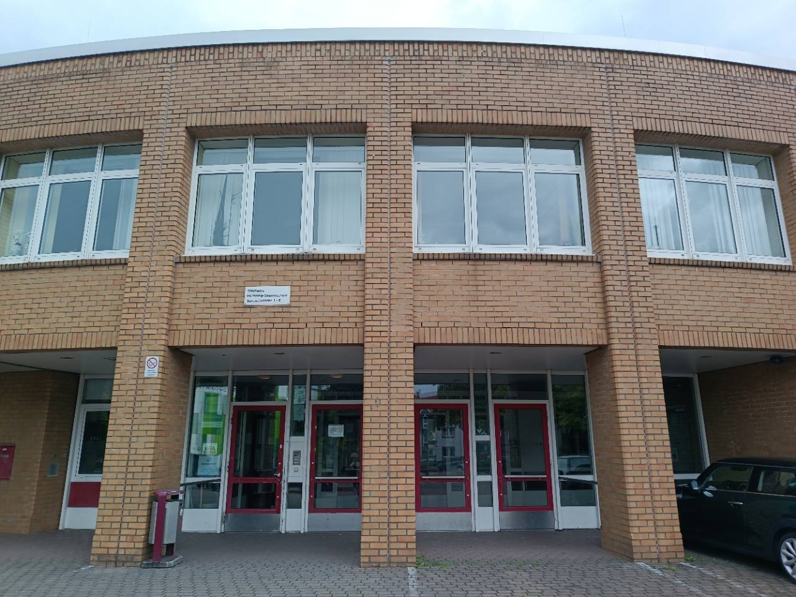
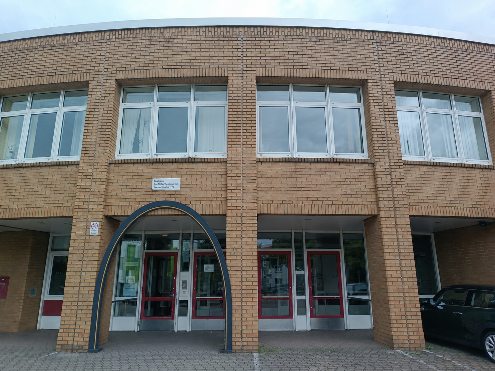

Schritt 1 · Reale Situation
Höre der Anfrage genau zu
Die Videobotschaft zeigt zunächst den heutigen Eingang und anschließend einen unverbindlichen Entwurf des neuen Bogens. Achte darauf, was geplant ist, welche Maße genannt werden und welche mathematische Unterstützung benötigt wird.

Kurze stille Denkzeit
Welche mathematische Frage könnte uns bei der Bearbeitung der Anfrage weiterführen?
Überlege kurz für dich. Du musst auf dieser Seite noch nichts eingeben oder aufschreiben.
Anschließend sammeln wir mögliche Fragen gemeinsam im Kurs. Die Lehrkraft hält die gebündelte Leitfrage ausschließlich am Whiteboard fest.
Schritt 2 · Reales Modell
Denken: Welches Modell könnte passen?
Arbeite zunächst allein. Es geht noch nicht ums Rechnen, sondern um eine begründete Modellentscheidung.
1. Funktionsart vermuten
Welche Funktionsart könnte den Bogen beschreiben?
2. Die Wirklichkeit vereinfachen
Schritt 3 · Mathematisches Modell
Erstellt eine beschriftete Bogenskizze
Arbeite ab jetzt mit deiner Sitznachbarin oder deinem Sitznachbarn. Fertigt gemeinsam eine Skizze an und entscheidet, wo der Ursprung eures späteren Koordinatensystems liegen soll.
1. Ursprung wählen
Wählt eine Ursprungslage. Für alle Varianten gilt: positive x-Richtung nach rechts, positive y-Richtung nach oben.
2. Verbindliche Bauvorgaben
Für den Modellierungsauftrag gelten die Entwurfsmaße b = 4 m und h = 3 m.
Schritt 4 · Mathematisches Modell
Sammelt eure charakteristischen Punkte
Ergänzt jetzt das Koordinatensystem passend zu eurer gewählten Ursprungslage in der Skizze. Die positive x-Richtung zeigt nach rechts, die positive y-Richtung nach oben. Haltet anschließend euren Paarvorschlag fest.
Euer Paarvorschlag
Die automatische Prüfung wird aktiviert, sobald Breite und Höhe eingetragen sind.
Selbstkontrolle mit der passenden Kontrollkarte
- Haltet eure Skizze mit beschrifteten Achsen und eure drei Punkte zuerst selbst fest.
- Eine Person holt vorne die Karte zu eurer Ursprungslage: Bodenmitte oder linker Fußpunkt.
- Vergleicht am Platz zu zweit. Erklärt euch: Wie entstehen diese Koordinaten aus 4 m Breite und 3 m Höhe?
- Korrigiert Abweichungen auf dem Begleitblatt in einer anderen Farbe und übertragt die berichtigten Punkte oben. Klärt offene Fragen mit der Lehrkraft.
Hilfe 1: Welche Stellen am Bogen sind besonders geeignet?
Suche den höchsten Punkt und die beiden Stellen, an denen der Bogen den Boden erreicht.
Hilfe 2: Wie kann die Symmetrie helfen?
Bei einem symmetrischen Bogen liegen die Fußpunkte gleich weit von der Symmetrieachse entfernt.
Schritt 4: Koordinaten kontrolliert
Nach abgeschlossener Kontrolle trägt eine Person eure Kürzel im Feld „Schritt 4: Koordinaten kontrolliert“ an der Tafel ein und legt die Karte zurück. Arbeitet anschließend selbstständig mit Schritt 5 weiter.
Schritt 5 · Mathematische Lösung
Bestimme den Funktionsterm
Dein vollständiger Rechenweg gehört auf das Begleitblatt. Nutzt den Scheitelpunkt und einen weiteren Punkt, um die bekannte Scheitelpunktform zu konkretisieren. Freiwillige Hilfen findet ihr unter dem Arbeitsplan.
1. Scheitelpunktform ansetzen
Lest d und e aus eurem Scheitelpunkt S(d | e) ab. Wählt anschließend einen weiteren bekannten Punkt P(x | y), mit dem ihr a bestimmen könnt.
2. Möglicher Arbeitsplan
Nutze die Liste als freiwillige Orientierung.
Hilfe: Wie bestimme ich a?
- Setze d und e aus S(d | e) ein.
- Setze für P(x | y) den x-Wert und den y-Wert ein.
- Löse die entstandene Gleichung nach a.
- Notiere den vollständigen Funktionsterm und prüfe ihn mit den übrigen Punkten.
Hilfe zum Prüfen eures Ansatzes
Setzt alle drei charakteristischen Punkte in euren fertigen Term ein. Stimmen die Funktionswerte, passen Scheitelpunktform, Ursprungslage und Punkte rechnerisch zusammen.
Schritt 6 · Zurück zur Realität
Prüfen und bewerten
Ein berechneter Term ist erst dann ein brauchbares Modell, wenn er zu den Vorgaben passt und seine Grenzen benannt werden.
Partnerprüfung
Rückbindung am Whiteboard
Grenze des Modells
Entwurfsbild aus dem Video mit eurem Modell vergleichen

Lerntempo-Duett · Abschlusssignal nach Schritt 6
- Prüft als Paar, ob alle Pflichtfelder und beide schriftlichen Rechenwege vollständig sind.
- Tragt eure Kürzel gemeinsam im Feld „Schritt 6“ an der Tafel ein.
- Dieser Eintrag ist das Signal für die Lehrkraft, dass ihr mit dem gesamten Modellierungsauftrag fertig seid.
Zusatzseite · Für Schnelle
Gleicher Bogen – anderer Funktionsterm?
Untersuche, wie sich der Funktionsterm verändert, wenn du nur die Lage des Koordinatensystems änderst.
Neue Perspektive
Wechsle zur anderen Ursprungslage: von der Bodenmitte zum linken Fußpunkt oder umgekehrt. Breite und Höhe des Bogens bleiben unverändert.
Notiere die drei charakteristischen Punkte im neuen Koordinatensystem.
Neuen Term entwickeln
Hilfe: Wie gehe ich vor?
Bestimme zuerst den neuen Scheitelpunkt S(d | e). Setze d und e in die Scheitelpunktform ein und nutze anschließend einen weiteren Punkt, um a zu bestimmen.